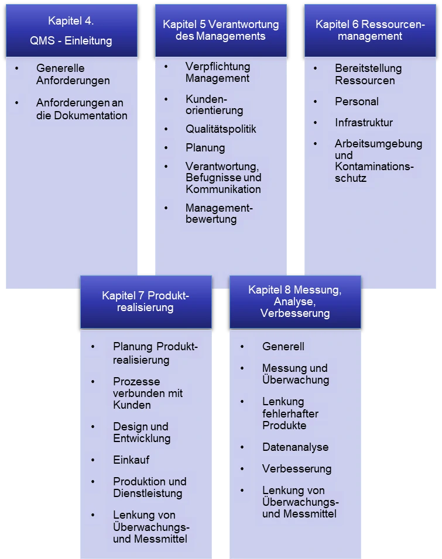

Qualitätsmanagementsystem (QMS)
Hierbei unterstützen wir Sie gerne, kontaktieren Sie uns!
Einführung
Laut Verordnung (EU) – 2017/745 (MDR), Abschnitt 32 müssen alle Hersteller von Medizinprodukte, bei denen es sich nicht um ein Prüfprodukt handelt, über ein Qualitätsmanagementsystem (QMS) verfügen. Sie müssen damit nachweisen und sicherstellen, dass alle serienmäßig hergestellten Produkte den Anforderungen der Verordnungen, wie hier der MDR, entsprechen. Generell muss dieses QMS eingerichtet, dokumentiert, angewendet, aufrechterhalten, ständig aktualisiert und kontinuierlich verbessert werden, so dass es die Einhaltung dieser Verordnung auf die wirksamste Weise, sowie auf einer der Risikoklasse und der Art des Produkts angemessenen Weise gewährleistet (MDR, Artikel 10, Abschnitt 9).
Das Ziel einer solchen Bewertung ist es laut MDR, Anhang 1:
- nachzuweisen, dass das Medizinprodukt bei bestimmungsgemäßem Gebrauch die grundlegenden Sicherheits- und Leistungsanforderungen erfüllt,
- unerwünschte Nebenwirkungen auszuschließen und
- die Vertretbarkeit des Nutzen-Risiko-Verhältnisses zu belegen.
Dabei umfasst das QMS alle Teile und Elemente der Organisation eines Herstellers, die mit der Qualität der Prozesse, Verfahren und Produkte befasst sind. Es regelt und steuert z.B. die rforderlichen Verantwortlichkeiten, Verfahren, Prozesse und Managementprozesse zur Umsetzung der Grundsätze und die Maßnahmen, die notwendig sind, um die Einhaltung der Bestimmungen dieser Verordnung zu erreichen (MDR, Artikel10, Abschnitt 9).
Beachten Sie: Alle erforderlichen Prozesse, Verfahren und Produkte, usw. müssen als dokumentierte Information vorliegen (QM-Handbuch, SOP/Verfahrensanweisungen, Q-Politik und Q-Ziele, usw., …)
Umfang des QMS laut MDR
Das QMS umfasst mindestens folgende Aspekte (MDR, Artikel10, Abschnitt 9):
- ein Konzept zur Einhaltung der Regulierungsvorschriften, was die Einhaltung der Konformitätsbewertungsverfahren und der Verfahren für das Management von Änderungen an den von dem System erfassten Produkten miteinschließt;
- die Feststellung der anwendbaren grundlegenden Sicherheits- und Leistungsanforderungen und die Ermittlung von Möglichkeiten zur Einhaltung dieser Anforderungen;
- die Verantwortlichkeit der Leitung;
- das Ressourcenmanagement, einschließlich der Auswahl und Kontrolle von Zulieferern und Unterauftragnehmern;
- das Risikomanagement gemäß Anhang I Abschnitt 3;
- die klinische Bewertung gemäß Artikel 61 und Anhang XIV einschließlich der klinischen Nachbeobachtung nach dem Inverkehrbringen;
- die Produktrealisierung einschließlich Planung, Auslegung, Entwicklung, Herstellung und Bereitstellung von Dienstleistungen;
- die Überprüfung der Zuteilung der UDI gemäß Artikel 27 Absatz 3 für alle einschlägigen Produkte und die Gewährleistung der Kohärenz und der Validität der gemäß Artikel 29 gelieferten Informationen;
- die Aufstellung, Anwendung und Aufrechterhaltung eines Systems zur Überwachung nach dem Inverkehrbringen gemäß Artikel 83;
- die Kommunikation mit den zuständigen Behörden, Benannten Stellen, weiteren Wirtschaftsakteuren, Kunden und/oder anderen interessierten Kreisen;
- die Verfahren für die Meldung von schwerwiegenden Vorkommnissen und Sicherheitskorrekturmaßnahmen im Feld im Rahmen der Vigilanz;
- das Management korrektiver und präventiver Maßnahmen und die Überprüfung ihrer Wirksamkeit;
- Verfahren zur Überwachung und Messung der Ergebnisse, Datenanalyse und Produktverbesserung.
Die DIN EN ISO 13485:2016
Im Falle von Medizinprodukten ist die DIN EN ISO 13485 (Medizinprodukte- Qualitätsmanagementsysteme – Anforderungen für regulatorische Zwecke) die Norm, nach der das QMS aufgebaut werden sollte. Nach dieser Norm werden die Hersteller auch zertifiziert. Sie enthält alle Anforderungen, die das QMS erfüllen muss. Sie ermöglicht es den Herstellern von Medizinprodukten nachzuweisen, dass ihre Produkte alle relevanten Anforderungen der europäischen Richtlinie 93/42/EWG oder der Verordnung (EU) – 2017/745 (MDR) erfüllen.
Die ISO13485 umfasst 4 Prozessbereiche unterteilt in Kapitel 5 bis 8 (Abbildung 1). Die einzelnen Prozessbereiche setzen sich wiederum aus vielen einzelnen Prozessen zusammen, die von der Leitung des Unternehmens definiert werden müssen („prozessorientierter Ansatz“). Die einzelnen Prozesse müssen dann z.B. in sogenannten SOP (Standard Operation Procedures, Verfahrensanweisungen) und einem Qualitätsmanagement-Handbuch beschrieben und dokumentiert werden.
Abbildung 1: Aufbau der DIN EN ISO 13485:2016 – Übersicht über die einzelnen Kapitel.
Wichtig: Hersteller die bisher nach der DIN EN ISO 9001:2015 zertifiziert sind, müssen sich nun auch nach der DIN EN ISO 13485:2016 zertifizieren lassen. Der Aufbau des QMS nach ISO 9001:2015 beinhaltet aber schon einen Großteil der Anforderungen der ISO 13485, so dass das QMS nur noch angepasst werden muss.
Sollten Sie Hilfe bei der Erstellung der erforderlichen SOPs benötigen, kontaktieren Sie uns. Wir helfen Ihnen gerne!